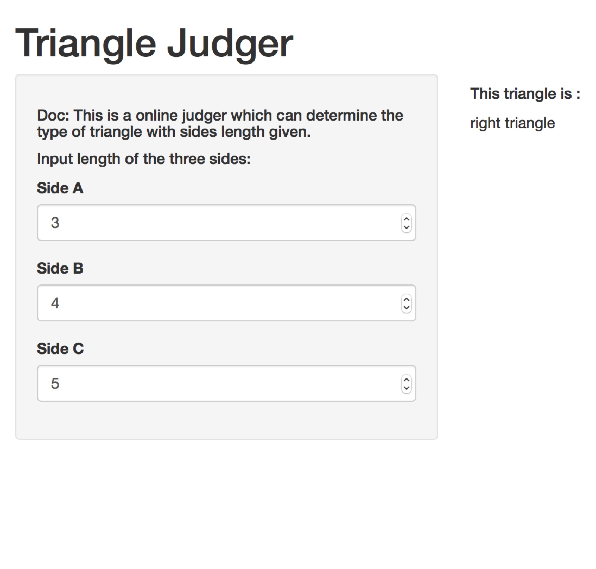
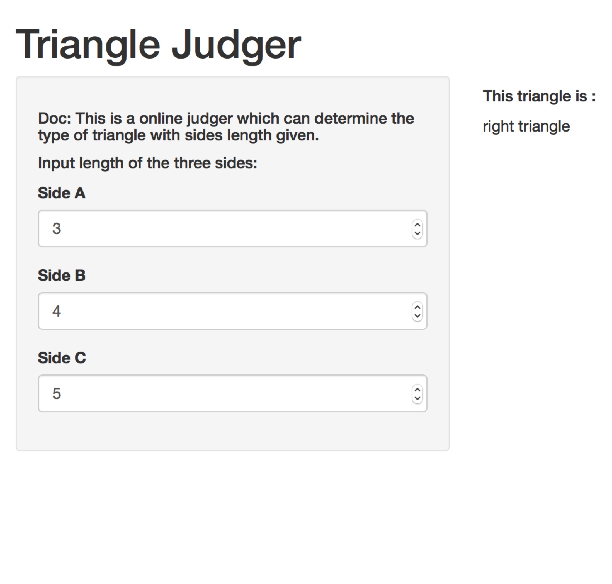

According the course project of Developing Data Products Course from Coursera, We create a small shiny app called Triangle Judge. It can determine the type of triangle with sides length given.
Triangle Judger
WangMing
IT Engineer
App Introduction
Input & Output
Assume the triangle has three sides called a, b, c, our app has three inputs:
1. a : length of side a
2. b : length of side b
3. c : length of side c
With all the side length given, the app will take caculation and return one of the results below:
1. equilateral triangle
2. isosceles triangle
3. right triangle
4. normal triangle
5. Illegal Side Length
Demo
Case 1 Case 2
 

Code
The core code is shown below:
judgeTriangle <- function(a, b, c) {
if (a>0 & b>0 & c>0 & a+b>c & a+c>b & b+c>a) {
if(a==b & b==c) { "equilateral triangle"
} else if(a==b | a==c | b==c) { "isosceles triangle"
} else if(a*a+b*b==c*c | a*a+c*c==b*b | b*b+c*c==a*a) { "right triangle"
} else { "normal triangle" }
} else { "Illegal Side Length" }
}
Demo run:
judgeTriangle(3, 4, 5)
## [1] "right triangle"